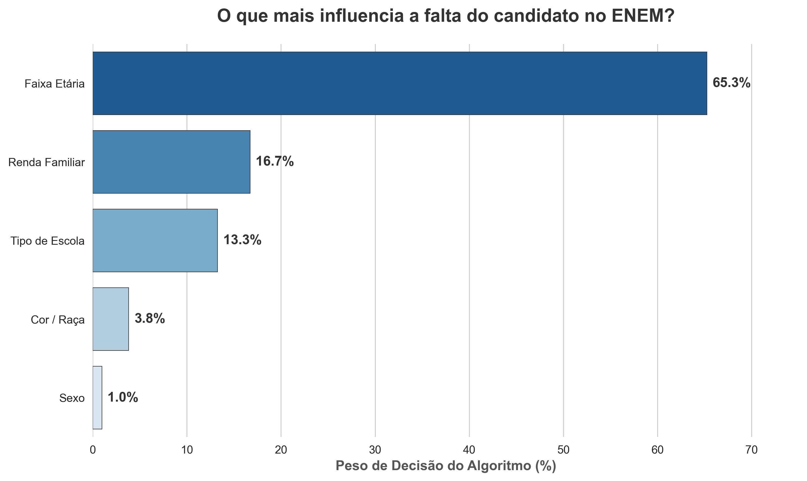
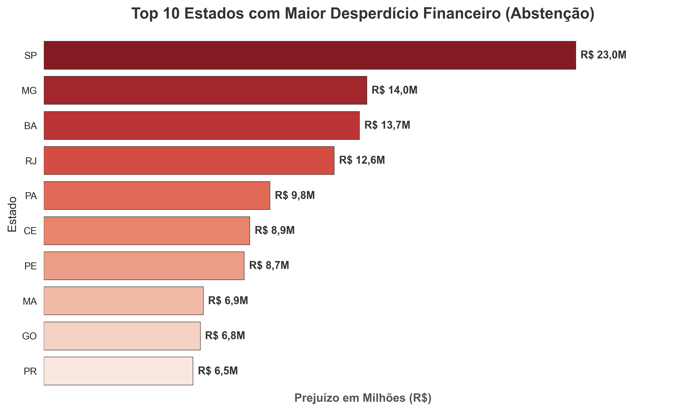
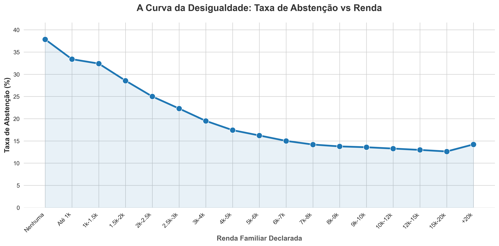
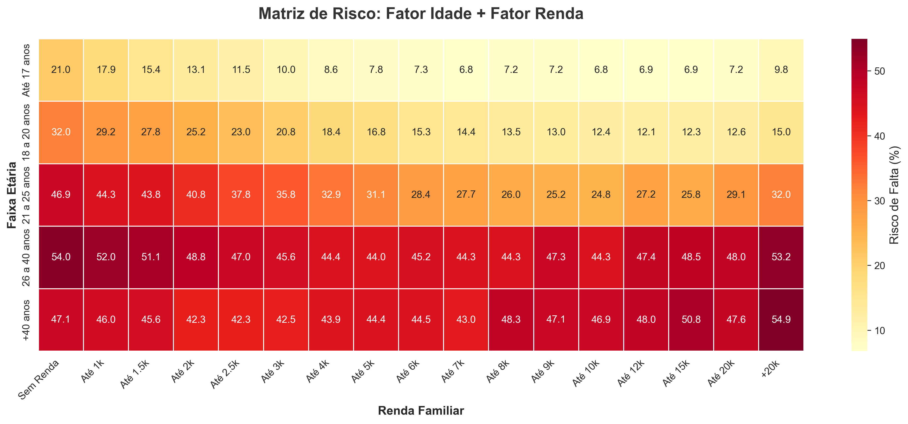

1. Importância das Variáveis (Feature Importance)
Ao rodar um modelo preditivo para classificar os candidatos entre ausentes e presentes, o algoritmo identificou as "pistas" mais fortes. Qual variável mais denuncia que o aluno vai faltar?
Insight Executivo: A Renda Familiar e a Faixa Etária são responsáveis por compor a quase totalidade do peso de decisão. Juntas, provam estatisticamente que a condição socioeconômica fala muito mais alto do que qualquer outro fator logístico.

2. Desperdício Financeiro por Estado
O custo logístico médio estimado pelo Inep por estudante é de aproximadamente R$ 146,00. Quando um estudante não vai, o custo está pago e a prova vai para o lixo.
Ponto de Atenção: Estados superpopulosos do Sudeste lideram o rombo financeiro sozinhos. São Paulo atingiu a marca sombria de R$ 26 Milhões rasgados.

3. A Curva da Desigualdade
Este gráfico traça o decaimento exato da taxa de abstenção conforme a renda sobe. Ele transforma o sentimento de desigualdade em um fato matemático.
Leitura Crítica: Notem a queda brusca (em formato de degrau) nos primeiros R$ 3.000 de renda. A partir daí, a curva se suaviza. Isso mostra que o risco de evasão está concentrado na extrema fragilidade financeira.

4. Mapa de Calor de Risco (Renda x Idade)
As duas variáveis que o Machine Learning considerou mais importantes foram agrupadas neste Heatmap. Quanto mais escuro o quadrado, maior é o risco deste candidato faltar.
A Tempestade Perfeita: O quadrado vermelho escuro localiza-se nos adultos (+26 anos) com baixíssima renda. Esse é o perfil do trabalhador que abdica do ENEM por necessitar trabalhar ou cuidar da família no final de semana.
